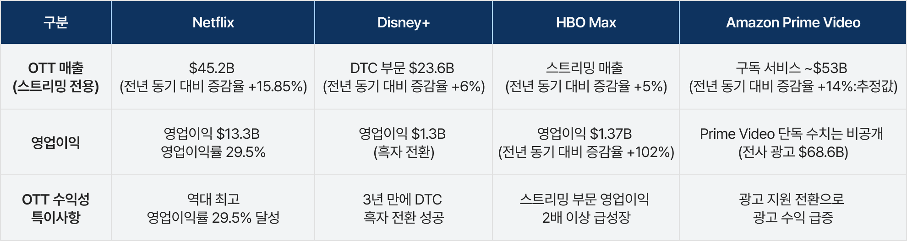
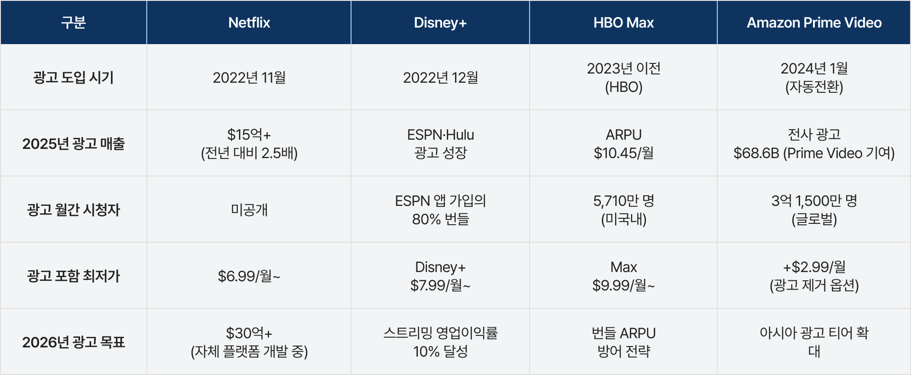
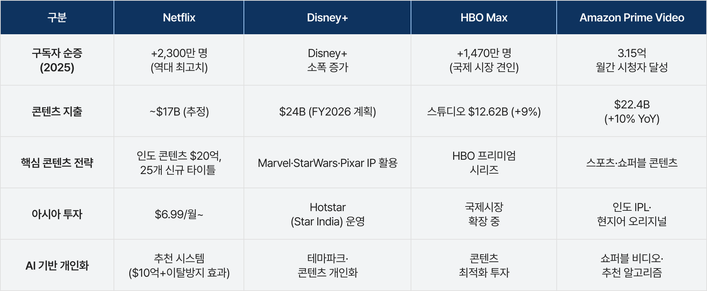
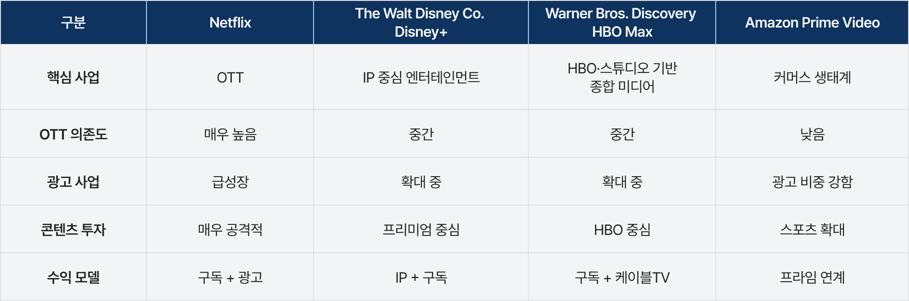

Netflix, Disney+, HBO Max(WBD), Amazon Prime Video
1) 종합 미디어 플랫폼으로 진화하는 넷플릭스
넷플릭스는 글로벌 OTT 시장의 대표적인 ‘순수 스트리밍(pure-play streaming)’ 기업이다. 팬데믹 시기인 2019~2021년 급성장했지만 2022년 성장 둔화를 겪은 이후, 광고 기반 요금제(AVOD/Hybrid tier)와 계정 공유 유료화(Paid Sharing)를 통해 2023~25년 다시 성장세를 회복하고 있다.1) 최근에는 광고 사업 확대가 핵심 전략으로 부상했으며, 공동 CEO 그렉 피터스(Greg Peters)는 2025년 광고 매출 약 15억 달러, 2026년 약 30억 달러 가능성을 언급했다.2) 현재도 구독(subscription) 매출 비중이 가장 크지만, 게임·라이선싱·라이브 콘텐츠 등 IP 기반 수익화 역시 확대되며 넷플릭스는 종합 미디어 플랫폼으로 진화하고 있다.
2) IP 생태계 강화로 수익성 중심 전략을 꾀하고 있는 디즈니플러스
월트디즈니컴퍼니는 영화·테마파크·방송·스트리밍을 아우르는 종합 미디어 기업으로, 스트리밍 플랫폼 디즈니플러스는 그 핵심 사업 중 하나다. 디즈니플러스는 2019년 출시 이후 2020~2022년 공격적인 가입자 확대 전략으로 급성장했지만3), 저가 요금제와 대규모 콘텐츠 투자, 글로벌 서비스 확대에 따른 마케팅·플랫폼 구축 비용 증가로 2022 회계연도 약 40억 달러의 운영 손실을 기록했다.4) 이후 2024~2025년부터는 가입자 확대보다 가입자당 평균 매출(ARPU:Average Revenue Per User) 개선과 비용 효율화에 집중하는 ‘수익성 중심(profitability-first)’ 전략으로 전환하고 있다.5) 동시에 마블(Marvel), 스타워즈(Star Wars), 픽사(Pixar) 등 핵심 IP를 기반으로 영화·게임·소비재·테마파크·라이선싱을 연계한 IP 생태계 수익화도 강화하고 있다.6)
3) 새로운 미래를 준비하고 있는 WBD
Warner Bros. Discovery(WBD)는 2022년 WarnerMedia와 Discovery, Inc.의 약 430억 달러 규모 합병으로 출범한 종합 미디어 기업이다. HBO·Warner Bros.·DC·CNN 등 프리미엄 콘텐츠와 Discovery 계열의 리얼리티 콘텐츠를 결합한 ‘전통 미디어 통합형 기업’이다.7) 당시 글로벌 OTT 경쟁 심화와 케이블TV 산업 쇠퇴 속에서 WBD는 HBO Max와 Discovery+를 통합한 스트리밍 플랫폼 HBO Max를 핵심 성장 전략으로 추진했다. 그러나 대규모 합병 이후 높은 부채와 케이블TV 산업 약화, 광고 시장 둔화로 재무 부담이 커져 2025년 기준 총부채는 약 326억 달러 수준으로8) 업계에서는 WBD를 레거시 미디어에서 스트리밍 중심 구조로 전환하는 과정에서 구조적 리스크가 매우 큰 기업으로 평가하고 있다. 이에 WBD는 비용 절감과 사업 재편을 통해 HBO Max의 글로벌 확장과 스트리밍 경쟁력 강화에 집중하고 있다.9) 최근에는 지난 2년 동안의 격동기를 거쳐 파라마운트 –스카이댄스(Paramount Skydance Corporation)와의 합병을 앞두고 있다.
4) 글로벌 스포츠 슈퍼 플랫폼화를 꿈꾸는 아마존
아마존은 클라우드·전자상거래·광고·물류·AI를 아우르는 복합 플랫폼 기업으로, 스트리밍 사업인 아마존 프라임 비디오는 전체 사업의 일부에 해당한다. 핵심 수익원은 아마존 웹 서비스(Amazon Web Services, AWS)·전자상거래·광고 사업에 있으며, 아마존 프라임 비디오는 독립 수익보다 프라임 멤버십 유지와 생태계 락인(lock-in) 강화를 위한 전략적 서비스 성격이 강하다.10) 최근에는 NFL·NBA·WNBA·MLB 등 주요 스포츠 중계권 투자를 확대하며 라이브 스포츠 중심 플랫폼 전략을 강화하고 있다.11) 이는 영화·드라마 중심 SVOD 모델에 집중하는 넷플릭스와 차별화되는 전략으로, 스포츠 콘텐츠를 광고·전자상거래·AWS·디바이스 사업과 연계하는 복합 플랫폼 전략이자 장기적으로 ‘글로벌 스포츠 슈퍼 플랫폼’ 구축을 지향한다는 분석도 제기된다.
2025년 주요 글로벌 미디어 기업 가운데 넷플릭스는 스트리밍 부문 매출 452억 달러와 영업이익률 29.5%를 기록하며 가장 높은 수익성을 보였다. 이는 글로벌 가입자 확대에 따른 규모의 경제 효과와 광고 지원 구독 티어(Ad-Supported Tier) 성장이 영향을 미친 것으로 분석된다.12)
디즈니플러스는 DTC(Direct-to-Consumer) 수익 부문에서 13억 달러 영업이익을 기록하며 흑자 전환에 성공했고, 이는 3년 전 약 40억 달러 규모의 손실에서 크게 개선된 수치이다.13)
HBO Max는 2025년 전사 매출 감소에도 불구하고 스트리밍 부문은 순수 영업이익14)이 전년 동기 대비 102% 이상 증가하며 수익성이 크게 개선돼 HBO Max 중심의 스트리밍 사업과 스튜디오 부문도 성장세를 보였다.15)
아마존은 프라임 비디오 단독 실적은 공개하지 않았지만, 전사 광고와 구독 서비스 매출 성장으로 스트리밍 사업 확대 흐름을 보여주고 있다. 아마존 프라임 비디오는 2025년 구독 서비스 매출이 전년 대비 약 14% 성장했고,16) 콘텐츠 투자 규모도 역대 최대인 224억 달러를 기록했다.17)

<표 1> 2025년 글로벌 OTT 핵심 재무성과 비교
*Amazon Prime Video는 단독 매출을 별도 공시하지 않으며, 구독 서비스 매출 및 전사 광고 매출로 간접 파악. Disney는 DTC 부문 기준 자료를 기반으로 함
(출처: 각사 SEC 8-K 공시 자료 및 공식 실적 발표문(2025.11~2026.3); MacroTrends (2026); Miracuves (2026))
2025년 글로벌 미디어 그룹의 실적 성장을 견인한 핵심 요인은 광고 시장 회복과 광고 기반 스트리밍 모델(Ad-Supported Tier)의 확산이다. 광고 지원 구독 모델은 주요 OTT 플랫폼의 새로운 수익 축으로 빠르게 자리 잡고 있으며, 각 기업은 서로 다른 방식으로 광고 사업을 강화하고 있다.
넷플릭스와 디즈니는 2022년 말 광고 기반 구독 모델을 도입하며 시장 선점에 나섰고, 아마존은 2024년 프라임 비디오 가입자를 광고 지원 형태로 전환하는 공격적 전략을 추진하였다. 넷플릭스는 광고 매출이 전년 대비 약 2.5배 증가한 15억 달러 규모로 성장했으며, 디즈니는 Disney+·ESPN 번들 전략을 통해 광고 접점을 확대하고 있다. WBD는 높은 가입자당 평균 매출(Average Revenue Per User, ARPU) 기반 수익 구조를 유지하고 있으며, 아마존 역시 전사 광고 매출 686억 달러를 기록하며 광고 사업 영향력을 확대하고 있다.18) 이러한 흐름이 지속될 경우 2026년에는 스트리밍 매출에서 광고 수익 비중이 약 50% 수준까지 확대될 것으로 전망된다.19)

<표 2> 2025년 글로벌 OTT 광고 지원 모델 도입 및 성과 비교
(출처: 각 사 미국 증권거래위원회(Securities and Exchange Commission, SEC) 공시; Mordor Intelligence (2026); Expert Market Research (2026); Variety (2026.2.6.))
각 기업은 구독자 확보와 유지를 위해 차별화된 콘텐츠 전략을 강화하고 있다. 넷플릭스는 2025년 연간 구독자 순증 2,300만 명으로 역대 최고치를 기록하며 글로벌 성장세를 이어갔고,20) 디즈니는 마블과 스타워즈와 같은 자사 핵심 IP를 기반으로 한 팬덤 전략으로 충성 구독자를 확보하고 있다. WBD는 HBO 프리미엄 시리즈를 통해 글로벌 시장에서 신규 구독자 1,470만 명을 유치했고, 아마존은 NFL TNF 평균 시청자 1,530만 명을 기록하며 스포츠 콘텐츠 경쟁력을 강화하고 AI 기반 쇼퍼블 비디오를 통해 콘텐츠와 커머스를 결합한 독자적 수익 모델을 확대하고 있다.21)
특히 넷플릭스와 디즈니플러스의 한국 콘텐츠 투자 확대가 주목된다. 넷플릭스는 2025년 연간 구독자 순증 2,300만 명을 기록하며 성장세를 이어가는 가운데, 인도 투자 확대와 함께 한국을 핵심 글로벌 제작 허브로 육성하고 있다. 특히 2021년 <오징어 게임> 성공 이후 한국은 넷플릭스의 핵심 글로벌 제작 허브로 부상했으며, 한국 콘텐츠 투자는 드라마를 넘어 영화·예능·리얼리티 등으로 확대됐다. 넷플릭스는 2023~2026년 한국 콘텐츠에 총 25억 달러 투자 계획을 발표한 바 있으며(연평균 한화 약 8천억 원 이상 규모),22) 이는 한국을 글로벌 콘텐츠 공급 기지로 강화하려는 전략으로 해석된다.23)
또한 넷플릭스의 비영어권 콘텐츠 비중은 2020년 33.8%에서 2024년 50.5%로 확대됐으며, 한국어 콘텐츠 비중도 2%에서 6.8%까지 증가했다.24) 2025년 넷플릭스의 글로벌 콘텐츠 투자 예산은 약 180억 달러로 추정되며, 이 가운데 한국 콘텐츠 투자 규모는 약 11억 달러(약 1조 5천억 원) 수준으로 분석된다.25) 이는 넷플릭스의 글로벌 콘텐츠 전략이 영어권 중심에서 다언어(multilingual) 중심으로 전환되고 있음을 보여주며, 특히 한국 콘텐츠가 영어·스페인어에 이어 핵심 콘텐츠 축으로 부상하고 있음을 시사한다.26)
한편 디즈니플러스는 국가별 콘텐츠 투자 규모를 공개하지 않지만, 2025~2026년 전체 콘텐츠 투자 규모는 약 230~240억 달러, 이 중 엔터테인먼트 부문은 약 120~140억 달러로 분석된다.27) 한국 콘텐츠 투자 규모는 연간 약 3~6억 달러(전체의 약 2~4%) 수준으로, 넷플릭스 대비 비중은 낮지만 아시아 전략 내 핵심 시장으로 평가된다.28) 디즈니플러스는 초기에는 마블과 스타워즈 중심 전략을 유지했으나, 2023년 오리지널 콘텐츠 <무빙> 제작 이후 한국을 핵심 제작 거점으로 재정의하며 로컬 콘텐츠 투자를 확대하고 있다.29) 다만 디즈니플러스는 넷플릭스와 달리 대량 제작보다 대형 IP·스타 캐스팅·고예산 중심의 선택과 집중 전략을 유지하고 있어,30) 콘텐츠 다양성과 가입자 유지 측면에서는 과제가 남아 있다.

<표 3> 2025년 글로벌 OTT 구독자 및 주요 콘텐츠 투자 전략 비교
(출처: 각사 공식 실적 발표; Hollywood Reporter(2026.1.20.); Expert Market Research(2026))
2025년 글로벌 미디어 시장은 단순한 OTT 경쟁을 넘어, 광고·IP·스포츠·커머스·플랫폼 생태계까지 결합된 종합 경쟁 체제로 전환되는 모습을 보였다. 넷플릭스는 광고 기반 스트리밍과 글로벌 콘텐츠 확장을 통해 순수 OTT 모델의 경쟁력을 강화하고 있으며, 인도와 한국 등 신흥·로컬 시장 투자 및 스포츠·광고 사업 확장에 집중하고 있다. 월트디즈니컴퍼니는 자사의 핵심 IP를 중심으로 하는 전략과 ESPN 스트리밍, 테마파크 투자 확대를 통해 수익성 강화에 나서고 있다.31) HBO MAX(WBD)는 부채 관리와 비용 절감, 라이선싱 및 번들 전략 중심의 구조조정을 추진하고 있으며, Max·Paramount+ 번들을 통해 구독자 이탈을 방어할 전망이다. 아마존은 스포츠 중계와 플랫폼 생태계를 결합한 복합 전략으로 영향력을 확대하고 광고 수익 50억 달러 이상을 목표로 광고 지원 티어를 아시아까지 확대할 계획을 추진 중이다. 이처럼 향후 2026년 이후 글로벌 미디어 시장은 단순 가입자 경쟁보다 수익성·광고·IP 활용·플랫폼 연계 역량이 핵심 경쟁 요소로 작용할 것으로 전망된다.

<표 4> 글로벌 미디어 기업의 사업 전략 비교
이러한 변화는 한국 미디어 시장에도 직접적인 영향을 미치고 있다. 글로벌 OTT 기업들의 광고 기반 요금제 확대는 국내 방송·디지털 광고 시장 경쟁을 심화시키고 있으며, 국내 플랫폼들도 AVOD·FAST 채널 전략 강화에 나서고 있다. 동시에 글로벌 기업들의 K-콘텐츠 투자 확대는 한국 제작사의 글로벌 협업 기회를 늘리는 반면, 제작비 상승과 IP 소유권 경쟁, 플랫폼 의존도 심화라는 과제도 함께 초래하고 있다.
또한 스포츠·커머스·멤버십을 결합한 플랫폼 경쟁이 확대되면서 국내 기업들도 스포츠 중계권 확보와 플랫폼 체류 시간 확대 전략에 집중하고 있다. 이에 따라 향후 한국 미디어 시장에서는 단순 콘텐츠 제작 역량보다 IP 확보, 광고 수익 모델, 플랫폼 생태계 구축, 글로벌 유통 능력이 더욱 더 중요해질 것으로 보인다.